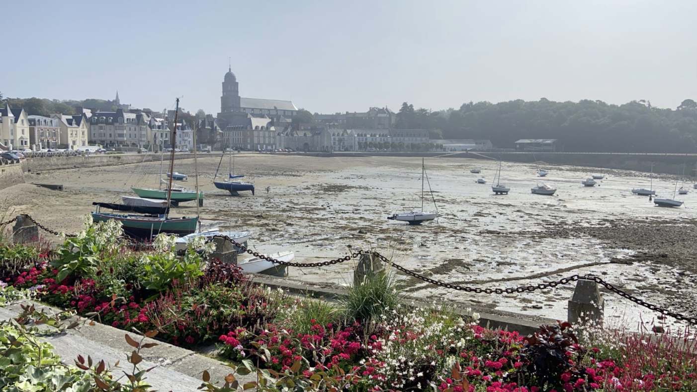

01
❤️ Saint-Malo — forcément à part
Saint-Malo, ce n’est pas vraiment une destination de voyage pour moi. C’est ma ville. J’ai grandi dans un petit village à une quinzaine de kilomètres, mais une grande partie de ma jeunesse s’est passée ici.
Mon collège, mon lycée, mes amis, mes sorties et mes balades… et probablement quelques-uns de mes 400 coups aussi ! 😇 Saint-Malo, ce sont également mes cours d’EPS sur les remparts, les baignades dans la piscine de mer et cette fameuse Saint-Ouine, la fête foraine que nous attendions avec impatience chaque année.
Saint-Malo est pourtant bien plus que mes souvenirs. Derrière ses remparts se cache l’ancienne cité corsaire, tournée vers la mer depuis des siècles. C’est d’ici que Jacques Cartier partit au XVIᵉ siècle pour ses voyages vers le Canada, et la ville fut aussi le port de célèbres corsaires comme Robert Surcouf. Presque entièrement détruite lors des combats de 1944, la cité intra-muros fut ensuite reconstruite avec le souci de préserver son caractère historique. Les remparts permettent aujourd’hui d’en faire le tour avec, d’un côté, les toits de la vieille ville et, de l’autre, la mer, les plages et les îlots accessibles à marée basse.
Alors forcément, lorsque Léon nous ramène à Saint-Malo aujourd’hui, je ne regarde pas la ville comme une simple visiteuse. Derrière les remparts, les plages et les rues que les voyageurs découvrent, je retrouve des morceaux de mon enfance et de ma jeunesse, jusqu’au quartier de Solidor, où vivaient mes arrière-grands-parents.
Saint-Malo, c’est toute une partie de ma vie. ❤️